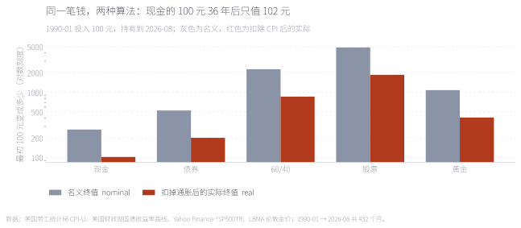
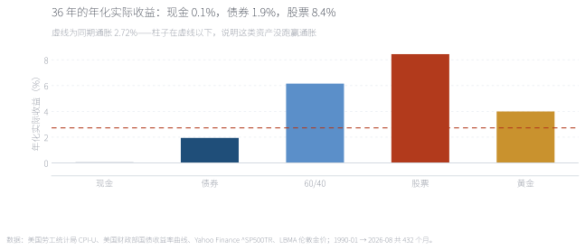
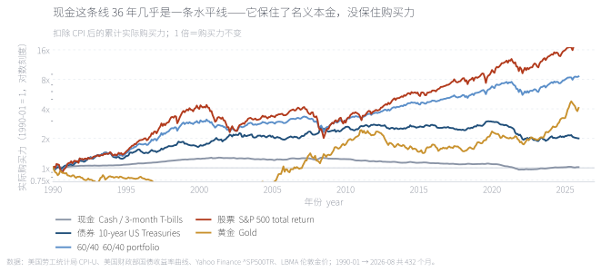
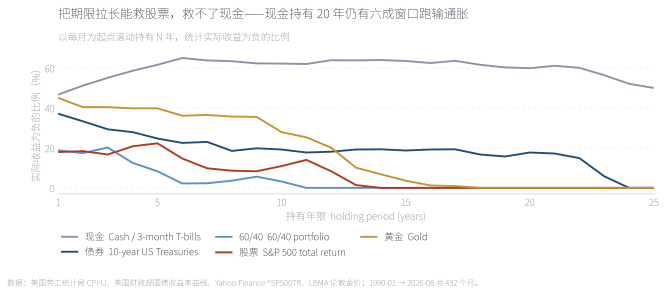
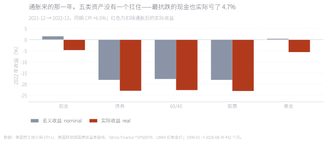
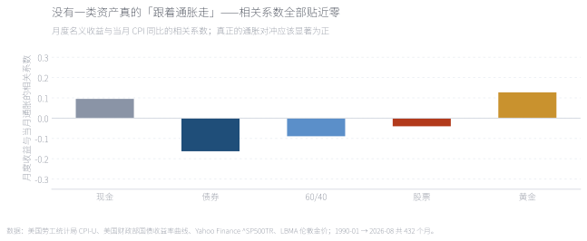

「钱放着会贬值，投资才能保值」是这个行业里最不需要论证的一句话。本文用 1990-01 至 2026-08 共 432 个月的美国数据检验它，结论是分层的：对股票成立——标普 500 全收益的年化实际收益 8.4%，36 年实际购买力 18.5 倍；对现金几乎不成立——3 个月国库券的年化实际收益只有 0.1%，最初的 100 元 36 年后只值 102 元，而且持有 20 年仍有 六成的窗口跑输通胀；对债券只是勉强打平（1.9%）。更反直觉的是 2022 年：通胀 6.5% 的那一年，五类资产没有一个扛住，连最抗跌的现金也实际亏了 4.7%。 "Cash loses value; investing preserves it" is the one line in this industry that nobody bothers to argue with. We test it on 432 monthly observations of US data from January 1990 to August 2026, and the answer splits. It holds for equities — the S&P 500 total return compounded at 8.4% a year after inflation, an 18.5-fold real gain. It barely holds for cash — three-month T-bills returned 0.1% a year in real terms, turning 100 into 102 over 36 years, and cash still trailed inflation in six of every ten twenty-year windows. Bonds merely broke even at 1.9%. Most counterintuitive is 2022: with inflation at 6.5%, not one of the five assets held up, and even cash lost 4.7% in real terms.
关键词 实际收益 · 购买力 · 通胀对冲 · 资产配置 · 期限溢价 · 现金拖累Keywords real returns · purchasing power · inflation hedge · asset allocation · horizon effects · cash drag
「投资能跑赢通胀」听起来像同义反复，其实它藏了两个彼此独立的前提：其一，通胀会持续为正——所以现金和存款会缩水；其二，投资的回报能跟上它。第一个前提在数据上没有问题，问题出在第二个：它把"投资"当成了一个整体，而现实里不同资产的表现差得很远。
本文用美国 1990-01 至 2026-08 共 432 个月的月度数据把这两件事拆开。样本起点由数据可得性决定——美国财政部的国债收益率曲线从 1990 年开始，这条曲线同时给了现金和无风险利率两条腿。样本内含 2022 年那次通胀（CPI 同比 6.5%），那是一次难得的现场测试：四十年来第一次，通胀高到能让"抗通胀"这句话真的受检。[1][2]
五类资产的口径：现金＝3 个月国库券（滚动持有）、债券＝10 年期美国国债、60/40＝六成标普 500 全收益加四成十年国债、股票＝标普 500 全收益、黄金＝伦敦金价。所有收益都先算名义、再除以同期 CPI 得到实际值。
名义收益是最容易骗人的数字。同一笔 100 元，说"36 年后变成 270 元"和说"36 年后只值 102 元"都对——差别只是有没有扣掉通胀。所以这篇从头到尾都用实际收益。

1990 年初投入 100 元，持有到今天：现金名义 270 元、实际 102 元；债券名义 520 元、实际 200 元；股票名义 4,900 元、实际 1,850 元。注意倒数第二根柱子——现金的名义收益全部是真的，但购买力几乎原地不动。
100 units invested in January 1990: cash ends at 270 nominal but 102 in real terms; bonds at 520 and 200; equities at 4,900 and 1,850.
来源：本文计算，数据见附录 A。Source: author's calculations; data in Appendix A.

把通胀画成一条虚线，柱子在线下就说明这类资产长期没跑赢它。现金（0.1%）整根柱子贴在零轴上，债券（1.9%）在通胀线下方，只有股票（8.4%）、60/40（6.2%）和黄金（4.0%）明显在上方。这就是"投资能跑赢通胀"这句话的问题所在：它说的是某一类投资，不是所有投资。
With inflation drawn as a line, any bar below it has failed to beat inflation over the long run. Cash sits on zero, bonds below the line; only equities, the 60/40 and gold clear it.
来源：本文计算；虚线为同期通胀 2.72%。Source: author's calculations; the line is 2.72% inflation over the same period.

这条对数刻度上的水平线就是全部答案：现金那条曲线 36 年基本是平的——中间的起伏是通胀和利率的拉锯，终点和起点几乎重合。而且路径比终值更值得看：现金在 2021 年之前其实是缓慢上行的（实际利率为正的年代），2022 一年把它打回了原点。
The flat line is the whole answer: cash's real purchasing power ends almost exactly where it started, having first drifted up during the years of positive real rates and then been reset in 2022.
来源：本文计算，扣除 CPI 后的累计实际购买力。Source: author's calculations; cumulative real purchasing power after CPI.
"长期投资"是这句话的第二个支撑。把每一个月末当作起点，滚动持有 N 年，统计"实际收益为负"的比例——也就是跑输通胀的概率。

这张图把五类资产分成两半。股票、60/40 和黄金的曲线随期限快速下降：标普 500 持有 20 年的每一个滚动窗口实际收益都是正的，黄金也是。而现金那条线几乎是水平的，在 50–65% 之间来回摆动——持有 1 年跑输的概率是 47%，持有 20 年仍然是 59.9%。换句话说：拉长期限能降低股票的不确定性，但降低不了现金的确定性劣势。债券居中：20 年跑输的比例是 17.7%。
Equities, the 60/40 and gold fall quickly with the horizon — no twenty-year window for the S&P 500 lost to inflation. Cash stays flat between 50% and 65%: 47% at one year, still 59.9% at twenty. Lengthening the horizon reduces equities' uncertainty, but cannot remove cash's certain disadvantage.
来源：本文计算，以每月为起点滚动持有。Source: author's calculations, rolling every month-end start.
上面都是长期结论。而「抗通胀」这句话真正被期待发挥作用的时刻，是通胀突然起来的那一年。样本里刚好有一次：2022 年，CPI 同比 6.5%，四十年最高。

五类资产的实际收益全部为负。名义上最抗跌的是现金（+1.5%），但扣掉 6.5% 的通胀后是 −4.7%；股票和债券名义都跌了近两成，实际亏了 23%——因为那一年美联储在加息，估值和债券价格同时被压。黄金名义基本持平（+0.4%），实际 −5.6%，是除现金外跌得最少的。没有一类资产在那一年扮演了"通胀保险"的角色。
Every asset had a negative real return. Cash was the most resilient nominally (+1.5%) but lost 4.7% after inflation; equities and bonds fell almost 20% nominally, or 23% in real terms. Gold was flat nominally and −5.6% real. Nothing acted as inflation insurance that year.
来源：本文计算，2021-12 → 2022-12。Source: author's calculations, December 2021 to December 2022.
把每类资产的月度收益和当月通胀放在一起算相关系数，答案很干脆：全部贴近零。最高的黄金是 +0.13，最低的债券是 −0.16。这意味着当通胀这个月突然跳升时，这些资产的当期收益对它几乎没有系统性反应。
这不是数据的偶然。Fama 与 Schwert（1977）很早就记录过这个现象：股票收益与通胀在短期甚至是负相关的，因为通胀上升往往伴随贴现率上升，两股力量相互抵消。[1] Katz、Lustig 与 Nielsen（2017）给出了更完整的解释——股票是"实际资产"，但它的实际属性要很长时间才显现，短期被贴现率效应主导。[3] Mehra 与 Prescott（1985）那篇著名的股权溢价之谜，本质上也在问同一件事：为什么承担了这么多风险，长期回报才刚好补偿过来。[2]

要成为合格的通胀对冲，相关系数应该显著为正——通胀涨、这项资产也涨。五根柱子都在正负 0.16 以内，等于没有关系。这也解释了为什么"买点黄金防通胀"这类说法在年度尺度上总是时灵时不灵：它赌的不是一个稳定的关系，而是一次特定行情。
A genuine inflation hedge would show a clearly positive correlation. All five bars sit within ±0.16 — effectively no relationship. That is why "buy gold for inflation" works in some years and fails in others: it is not a stable relationship.
来源：本文计算，月度名义收益 vs 当月 CPI 同比。Source: author's calculations; monthly nominal returns against year-on-year CPI.
左图是"持有 N 年跑输通胀的比例"，右图是同一期限下的中位实际收益。把年限从 1 拖到 25，可以清楚看到两件事：股票和黄金的概率一路降到零，现金的柱子几乎不动；而中位实际收益那一侧，现金的柱子始终贴着零轴。这也回答了开头那个问题——"投资能跑赢通胀"要成立，需要两个条件同时满足：买的是股权类资产，并且持有的时间足够长。
The left panel is the share of horizons that lose to inflation, the right panel the median real return at that horizon. Drag from 1 to 25 years: equities and gold fall to zero, cash barely moves, and cash's median real return stays pinned near zero.
来源：本文计算，数据见附录 A。Source: author's calculations; data in Appendix A.
这篇文章的结论不是一个"能"或"不能"，而是要把问题拆成两件不同的事。第一件是长期购买力：能不能在几十年里持续提供高于通胀的回报。这一件上，股权类资产做到了（实际年化 8.4%），60/40 也做到了（6.2%），黄金做到了但幅度小得多（4.0%）；债券只是打平（1.9%），现金完全没有做到（0.1%）。第二件是当期对冲：通胀冲上来的那一年，能不能保护你。这一件上，五类资产在 2022 年全部为负，月度相关系数全部贴近零——没有一类资产真正承担了这个角色。
把两件事混在一起，就会得到那些听起来对、用时不对的话：用"长期能跑赢通胀"去安慰一个明年要用钱的人，或者用"黄金抗通胀"去解释一个当年就亏损的组合。更实用的表述是：用股权类资产解决长期购买力问题，用期限匹配和现金仓位解决当期支出问题，而不要指望任何单一资产同时对冲通胀的到达。
最后是边界。样本只有美国、只有 36 年，且恰好覆盖了一段实际利率从高位回落到零再抬升的完整周期——换一个国家或换一个起点，"现金实际收益 0.1%"这个数字会变。债券收益用收益率曲线近似，未计入真实债券基金的费率；现金用 3 个月国库券代表，而个人存款利率通常还低于它，所以现金的实际表现可能比文中更差。这些都不改变主结论，但值得写在明处。
Full English version below.
Question. "Cash loses value; investing preserves it" is repeated so often that its two assumptions go unexamined: that inflation persists, and that investment returns keep up with it. We test both on 432 monthly US observations from January 1990 to August 2026.
Result 1 — the second assumption fails for two of the five assets. Real annualised returns: the S&P 500 total return 8.4%, a 60/40 mix 6.2%, gold 4.0%, 10-year Treasuries 1.9%, three-month T-bills 0.1%. 100 units in cash became 270 nominal and just 102 after inflation — the entire nominal gain was consumed.
Result 2 — the horizon rescues equities, not cash. Rolling every month-end start, no twenty-year window for the S&P 500 had a negative real return, and the same holds for gold and the 60/40. Cash's curve is flat: 47% of one-year horizons lost to inflation, and still 59.9% at twenty years. Lengthening the horizon reduces uncertainty for risky assets; it cannot remove cash's certain disadvantage.
Result 3 — 2022 tested the hedge claim directly. With CPI at 6.5%, all five assets had negative real returns. Cash was the most resilient nominally (+1.5%) but lost 4.7% real; equities and bonds lost about 23% real; gold was flat nominally and −5.6% real.
Result 4 — nothing is a real inflation hedge. Correlations between monthly returns and monthly inflation sit within ±0.16 for every asset. Fama and Schwert (1977) documented the short-horizon negative relation; Katz, Lustig and Nielsen (2017) explain it through sticky discount rates — equities are real assets, but their realness shows up over decades, not quarters.
Implication. Separate the two questions. For long-run purchasing power, equity-like assets work and cash does not. For the arrival of inflation, almost nothing works. Mixing the two produces advice that sounds right and fails when used.
数据。美国 CPI-U（BLS，CUUR0000SA0）；美国财政部国债收益率曲线（3 Mo 与 10 Yr，1990 起，取月末值）；标普 500 全收益指数（Yahoo Finance ^SP500TR，月度）；LBMA 伦敦金价月序列（datahub.io）。样本 1990-01 至 2026-08，共 432 个月（个别月份因收益率曲线缺值被跳过）。访问日期 2026-10-04。
做法。现金＝3 个月国库券收益率 ÷ 12；债券＝票息 ÷ 12 − 久期 7.5 × 收益率变动；60/40＝60% 股票 + 40% 债券；股票与黄金用价格变动。实际收益＝(1 + 名义) ÷ (1 + 通胀) − 1。滚动持有 N 年＝以任一月末为起点、连续持有 N×12 个月的实际收益。
未计入。交易成本、税费、汇率；债券用收益率曲线近似，未计入真实债券基金的费率与跟踪误差；现金用 3 个月国库券代表，个人存款利率通常更低。样本仅覆盖美国，且只有一段完整周期。
代码。tools/fetch_inflation_raw.py（取数）、tools/make_inflation_data.py（全部统计）、tools/make_inflation_figs.py（六张图）、tools/make_inflation_note.py（本页与交互图）。固定输入可完全复现。
Data. US CPI-U (BLS, CUUR0000SA0); US Treasury yield curve (3-month and 10-year, month-end, from 1990); S&P 500 total return (Yahoo Finance ^SP500TR, monthly); LBMA London gold price, monthly (datahub.io). Sample: January 1990 to August 2026, 432 months (a few months skipped where the yield curve had gaps). Accessed 4 October 2026.
Method. Cash = three-month T-bill yield ÷ 12; bonds = coupon ÷ 12 − duration 7.5 × change in yield; 60/40 = 60% equities + 40% bonds; equities and gold from price changes. Real return = (1 + nominal) ÷ (1 + inflation) − 1. A rolling holding period of N years starts at every month-end and holds for N×12 months.
Not included. Transaction costs, taxes and FX; bonds are approximated from the yield curve with no fund fees or tracking error; cash is proxied by T-bills, whereas retail deposit rates are typically lower. The sample covers the US only, and only one full cycle.
Code. tools/fetch_inflation_raw.py, tools/make_inflation_data.py, tools/make_inflation_figs.py, tools/make_inflation_note.py.
一、用哪国的通胀。本文用美国 CPI，因为所有资产都以美元计价。对以港币或人民币计价的投资者，还要叠加汇率：过去 36 年美元走强的年份，本币计价的美国资产实际收益会明显低于文中的数字。
二、起点决定了现金的结论。1990 年的起点恰好是实际利率的高位。若从 1980 年（实际利率更高）或 2010 年（实际利率为负）开始，"现金实际收益 0.1%"会明显不同——现金的长期结论对利率周期高度敏感。
三、房子不在这张图里。房产的实际收益高度依赖杠杆、按揭利率、地点与持有成本，用任何一个公开指数代表"买房"都会失真，所以本文没有把它纳入同一个坐标系。这不代表房产不重要，只代表它不适合和这五类资产放在同一张图里比较。
One: whose inflation. We use US CPI because every asset is dollar-denominated. For a Hong Kong or mainland investor, FX sits on top: in years when the dollar strengthened, the local-currency real return on these US assets was materially lower than shown.
Two: the start date decides the cash result. January 1990 happens to sit near a peak in real rates. Starting in 1980 (higher real rates) or 2010 (negative real rates) would move the 0.1% figure substantially — cash's long-run record is highly sensitive to the rate cycle.
Three: property is not on this chart. Housing returns depend heavily on leverage, mortgage rates, location and carrying costs; any single public index would misrepresent "buying a home". It is excluded for comparability, not because it does not matter.